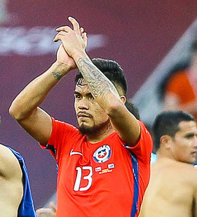

| Nombre | Posición | Edad | Bibliografía | Portada |
|---|---|---|---|---|
| Darío Osorio | Mediocampista ofensivo | 19 |
Darío Osorio es un joven talento chileno nacido en 2004. Se destaca por su visión de juego, habilidad técnica y capacidad para crear oportunidades de gol. Actualmente juega en el Club Universidad de Chile. Ha participado en diversas categorías juveniles de la selección chilena y se proyecta como una de las futuras figuras del fútbol nacional. |
|
| Ben Brereton | Delantero | 25 |
Ben Brereton Díaz, nacido en Inglaterra, tiene doble nacionalidad y representa a Chile. Es conocido por su potencia física y olfato goleador. Juega en el Blackburn Rovers en Inglaterra y es pieza clave en la selección chilena. Su incorporación a la selección ha revitalizado el ataque chileno, aportando goles y presencia en el área rival. |
|
| Rodrigo Echeverría | Defensa central | 26 |
Rodrigo Echeverría es un defensa central sólido y con buen manejo del balón. Ha jugado en equipos chilenos como O’Higgins y Universidad Católica, aportando experiencia y liderazgo. Destaca por su capacidad para anticipar jugadas y su versatilidad para jugar en diferentes posiciones defensivas. |
|
| Felipe Loyola | Mediocampista | 23 |
Felipe Loyola es un centrocampista chileno destacado por su capacidad de recuperación y distribución del balón. Juega en el fútbol local y está en proceso de consolidarse en la selección. Su rendimiento en clubes nacionales ha llamado la atención de los entrenadores de la selección mayor. |
|
| Lucas Assadi | Mediocampista ofensivo | 19 |
Lucas Assadi es una promesa del fútbol chileno con grandes habilidades técnicas y visión para asistir y anotar goles. Ha formado parte de las selecciones juveniles y juega en Universidad de Chile. Se le considera un jugador con gran futuro gracias a su talento y disciplina en el campo. |
 |
| Luciano Cabral | Delantero | 30 |
Luciano Cabral es un delantero con experiencia en clubes argentinos y chilenos. Es reconocido por su garra, velocidad y capacidad para marcar goles importantes. A lo largo de su carrera, ha demostrado ser un jugador comprometido y efectivo en el área rival. |
|
| Guillermo Maripán | Defensa central | 28 |
Guillermo Maripán es un defensa central clave en la selección chilena y en el AS Monaco. Destaca por su juego aéreo, posicionamiento y liderazgo defensivo. Su presencia aporta seguridad a la defensa y es pieza fundamental en partidos importantes a nivel internacional. |
|
| Paulo Díaz | Defensa central | 29 |
Paulo Díaz es un defensa con experiencia en clubes de Chile, Argentina y Arabia Saudita. Es conocido por su robustez, anticipación y buena salida desde atrás. Además, su versatilidad le permite adaptarse a varias posiciones en la defensa y el mediocampo defensivo. |
 |
| Thomas Gillier | Mediocampista | 21 |
Thomas Gillier es un joven mediocampista chileno con potencial para crecer en el fútbol profesional. Se caracteriza por su buen manejo del balón y entrega en la marca. Se espera que en los próximos años logre consolidarse en equipos de mayor nivel y en la selección nacional. |
|
| Vicente Pizarro | Mediocampista ofensivo | 20 |
Vicente Pizarro es una de las jóvenes promesas de Colo-Colo y del fútbol chileno, con talento para el pase y la creación ofensiva. Su estilo de juego creativo lo hace una pieza importante en los esquemas tácticos de su equipo y la selección. |
 |
| Lucas Cepeda | Delantero | 21 |
Lucas Cepeda es un joven delantero chileno con gran capacidad goleadora y movilidad en el ataque. Juega en la Primera División de Chile y es considerado una promesa para el futuro del país. |
|
| Alexander Aravena | Delantero | 21 |
Alexander Aravena destaca por su velocidad, habilidad técnica y olfato goleador. Es un joven atacante que ha mostrado gran rendimiento en las categorías inferiores y en la liga chilena. |